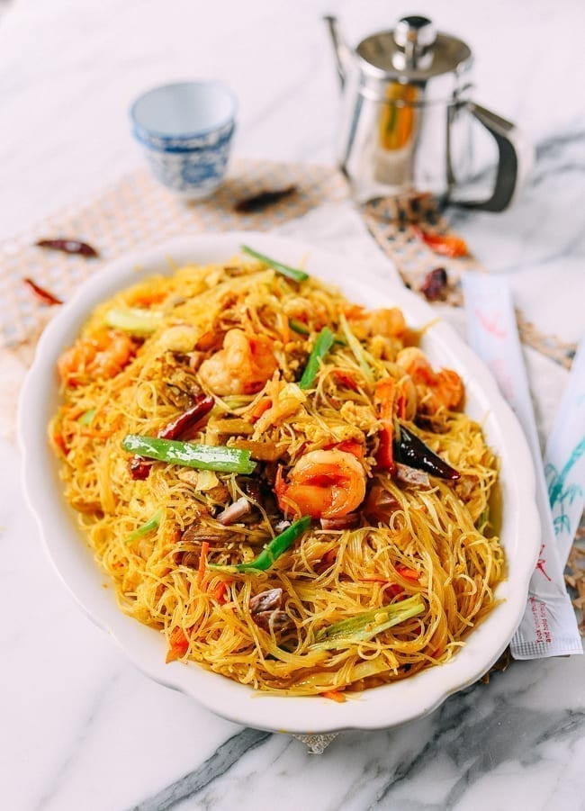
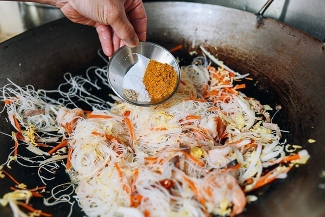

Singapore Noodles

Ingredients
- 5 ounces dried vermicelli rice noodles
-
12 large frozen shrimp (peeled, deveined, and butterflied)
- 2 1/2 tablespoons vegetable oil (divided)
- 2 eggs (beaten)
- 2 cloves garlic (chopped)
- 1 teaspoon salt or to taste
Preparation Time
Instructions
-
Rehydrate the rice noodles either by soaking in cold water overnight,
soaking in hot water for at least 30 minutes, or boiling for 1 minute
(check package instructions before boiling).
-
On to the shrimp. We call for a dozen large shrimp in this recipe. You
can also use a larger quantity of smaller shrimp if you like, as long
as it’s about 6-8 ounces/170-225g. Peel the shrimp, butterfly them
from the back, and de-vein. Rinse and pat dry before cooking.
-
Heat your wok over medium heat, and add 1 tablespoon of oil. Add the
eggs, and when they’ve cooked and bubbled along the sides, flip them
over. Break the egg up into rough strips with your wok spatula. Remove
from the wok and set aside.

-
Heat your wok over medium heat, and add 1 ½ tablespoons of oil and the
garlic. Cook for 15 seconds, and add the shrimp and roast pork (or ham
or Chinese Sausage). Stir-fry for another 15 seconds.
-
Next, add the scallions and red onion, and continue to stir-fry for
another 20 seconds. Plate and serve with chili oil.
Other Recipes
Main Page